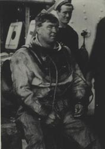

|
|
DEEP DIVING & DECOMPRESSION - NICK BAKER
The next great advance in diving came around the turn of the century when the Royal Navy recognised the need for a deeper diving capability. This arose from the introduction of the submarine.
Early vessels had a tendency to be lost and with crews trapped on the bottom the Navy had to be able to intervene quickly and effectively. In 1904 the Admiralty formed a deep diving committee. A key person was Professor J.S. Haldane: a character of vital importance in diving history. Haldane was an eminent physiologist who during the 19th century had worked on various physiological problems. By studying previous workers he thought that he had found the answer to the Royal Navy’s problems.
The first problem to be overcome was that of carbon dioxide poisoning. Because of inefficient pumps the vast majority of Royal Navy divers were actually being asphyxiated before they left the surface.
After some minor adjustments to pumps Haldane was able to push divers deeper. One way in which the air flow to the divers was improved was by the insertion of piston rings as opposed to leather cups. Gas sampling and analysing equipment tested for carbon dioxide levels which were reduced by improved ventilation of the helmet.
And then he encountered his greatest problem: that of decompression. By looking at previous work Haldane realised that no problem occurred if a diver was brought to the surface from a depth of less than 33' or 1 atmosphere.
At depth the pressure of nitrogen in the breathing air is increased. It dissolves in all the body’s tissues at different rates, at greater depths it dissolves faster.
As the diver ascends, the gas comes out of solution via the lungs. But if the difference between the tissues and ambient pressure becomes too great, the gas cannot be held in solution and bubble formation begins.
The ‘bends’ occur when the bubbles block small arteries, starving the tissues of oxygen. In the periphery this causes aching and skin rashes; the ‘niggles’. In the central nervous system, paralysis and death.
Haldane deduced that if a diver was brought to the surface in stages, reducing his depth each time, and waiting while excess nitrogen left his body, he could safely proceed to the surface via a series of steps - Staged Decompression. From these experiments Haldane produced the first decompression tables.
These were tried out in the Autumn of 1905 in a loch off the Western Coast of Scotland. Two divers, one a young lieutenant named Damant, who later became the Navy’s first inspector of diving, and another - an old hand - a chief petty officer named Catto, successfully reached a depth of 200 feet and, using staged decompression, returned safely to the surface. By the introduction of staged decompression Haldane had opened the way to deeper, safer diving and a new era in diving history had begun.
The advent of staged decompression heralded the introduction of a whole new range of diving techniques and improvements in diving technology. Decompression chambers were introduced and the standard dress was improved and entered its hey day. As a result a number of spectacular diving operations were carried out. One of the most notable was the recovery of £5,000,000 worth of gold from the armed merchant cruiser Laurentic, lost off the north of Ireland in 1917.
LAURENTIC GOLD RECOVERY - ROB PALMER
A solitary bell calls worshipers to chapel in the small hamlet of Portsalon on the western flank of Lough Swilly, County Donegal. The chime also echoes the story of a dramatic salvage operation which saw the retrieval of a ship’s bell that had lain forgotten on the sea bed for seven years.
The Laurentic was a White Star Liner of 15,000 tons gross. On a dark night in January 1917 she set sail from Liverpool for the cover of Lough Swilly on the Northern Irish coast. The next evening during her departure for Halifax, Nova Scotia, running the gauntlet of German destroyers and submarines, she struck a mine as she entered the rough North Atlantic Sea. Exposure in the bitter weather took its toll. 354 out of 475 officers and men on board were lost.
At a depth of 120' lay the remains of a once proud ship and in the heavily secured second-class baggage room, 3,211 bars of gold.
The Treasury could not afford to loose so much gold and thus the Admiralty approached Captain Guyban Damant. He accepted the challenge and recruited some of the leading Royal Navy divers. The first divers to descend found the ship lying unevenly and had great difficulty in moving across the steeply sloping decks.
LAURENTIC GOLD RECOVERY - GRAHAM SHAW FOR DAMANT

What would strike you most perhaps would be how dark, how cold and how silent it is down there...We found the wreck lying over on her port bilge in twenty-two fathoms, intact except for a pair of big fractures through her side. Within a couple of weeks diver Miller had forced his way through a cross passage to the strong room and broken the door off its hinges; by the dim light of his torch he could make out the bullion boxes flung into a heap in the lower angle of the space.
Each box weighed 140lb - £8,000 in gold ...
Four were hoisted to the surface in quick succession but the sea was rising so quickly that we were forced to slip our anchors and run for shelter without waiting for more.
It blew a whole gale for ten days and when we were able to face the weather and get divers down again it was a bitter disappointment to find that the wreck had collapsed quite flat as though a giant steam roller had passed over her. There was now no more room between her decks than there is under a double bed...
By blasting, and tunnelling, a passage was driven to the old strong room, but it was empty and the floor gaped in large rents through which the gold must have fallen and slid away to lower levels, now inaccessible. Nothing remained but to cut all that part of the wreck into pieces with explosives and hoist it to the surface layer by layer so that the gold, wherever it might be hidden, would eventually be exposed to view.
“Concentrate on the rubbish - the gold will yield itself up.”
After two months’ work and the hoisting of many hundreds of tons of wreckage, the first gold bars turned up;
Nuts, bolts & crockery embedded in gold.
they were still bright but bent and scored by the grinding and crushing which they had sustained between the frames and plates of the ship as she broke up during the greatest gale...
By the time that all the steelwork had been lifted, a little more than half the gold had been salved. The rest had sunk deep into the sea bed and had to be dug for with the aid of a powerful jet of water pumped down from the salvage ship Racer, which had taken the place of the old Volunteer. With one hand the divers would thrust the bronze nozzle of the hose deeply into the shingle while with the other followed it up, exploring this way and that among the buried pebbles and sharp debris for the smooth edge or corner of a gold bar.
Most gold found by a diver in a day - £45,000.
This work was cruelly hard on their hands...
Seven seasons ended in 1924.
These men were working for their country and the best reward for all of them must be to look back on a job well done...
11 divers awarded MBE.
Just 25 bars missing - 3 later recovered.
and best of all how, through care and honest work,
Commander Damant promoted to Captain.
it was done without loss of life or injury to any of their shipmates.
|
|